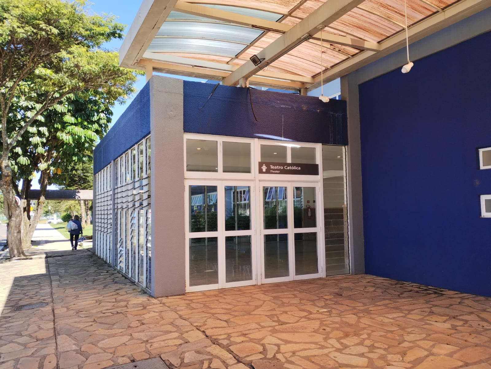

DESCRIÇÃO
O Teatro é um importante espaço cultural, localizado no Bloco Central. Ele se destaca como um ambiente propício para a realização de diversos eventos, tanto acadêmicos quanto culturais, abertos à comunidade interna e externa da instituição.
SALAS E DEPARTAMENTOS
HORÁRIO DE FUNCIONAMENTO
- O horário de funcionamento do Teatro Católica é flexível e depende da agenda de eventos específicos. Não há um horário fixo de abertura e fechamento diário como em um cinema comercial.